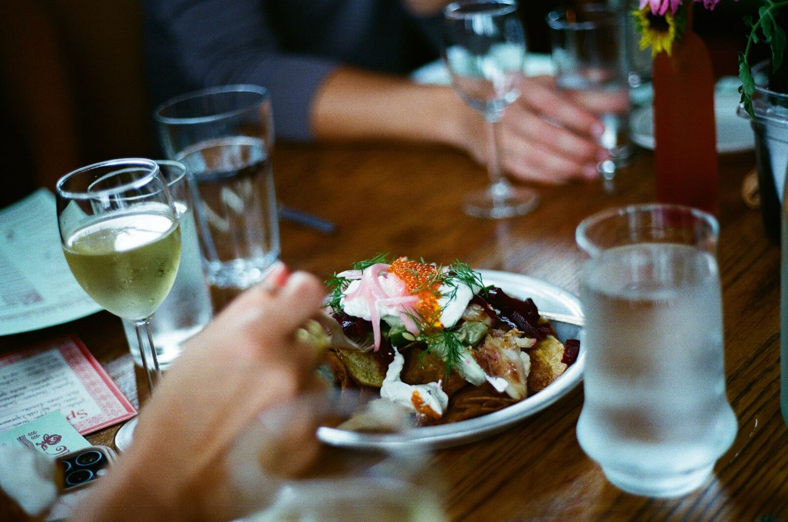

Menu
Dinner.
Written after the delivery, not before it. Everything here is text, so you can search it, read it on a phone, and copy the bit you want to send a friend.
(v) vegetarian · (gf) gluten free. Ask about anything you need to avoid and the kitchen will tell you straight.
Drinks
Cocktails, beer and a short wine list.
Pickle martinis and a tomato horseradish martini are the ones people come back for. The full drinks list is not published here yet.
Placeholder in this concept: Roses has never published a drinks list on the web, so there was nothing accurate to reproduce. It would come from the restaurant.

Reservations open thirty days out.
Dining room and bar, on Resy. Walk-ins welcome. Closed Tuesday.